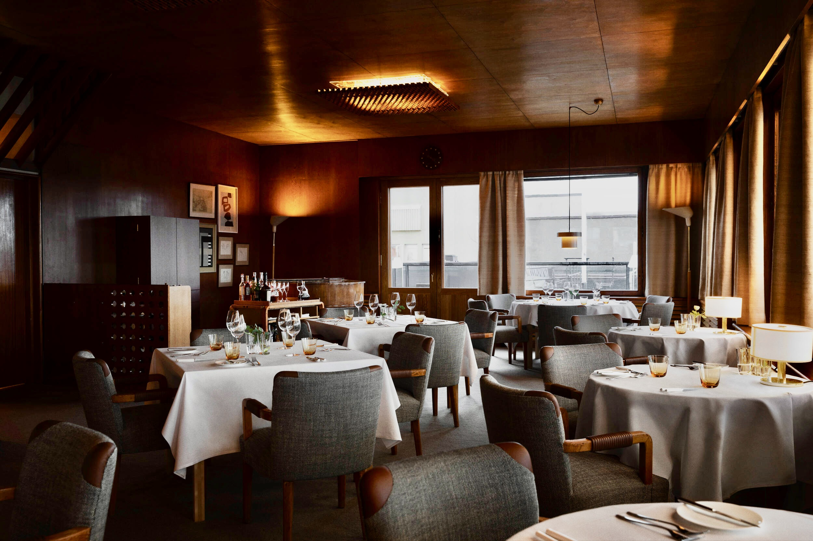
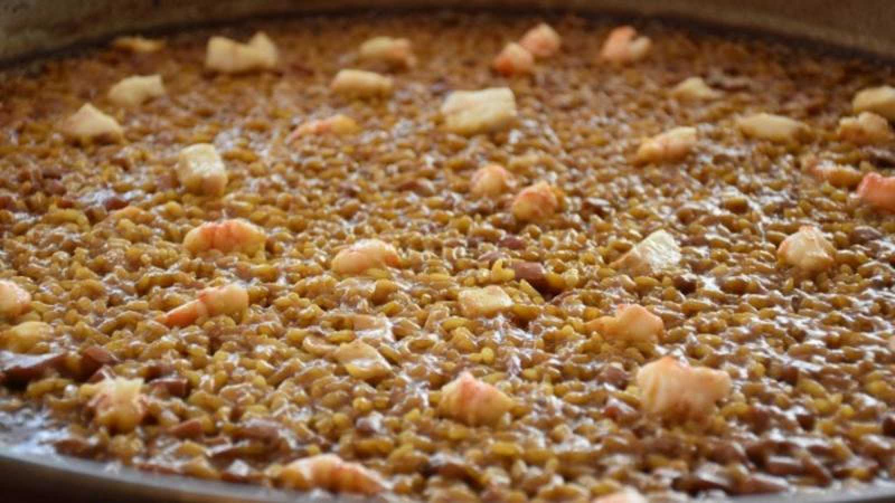
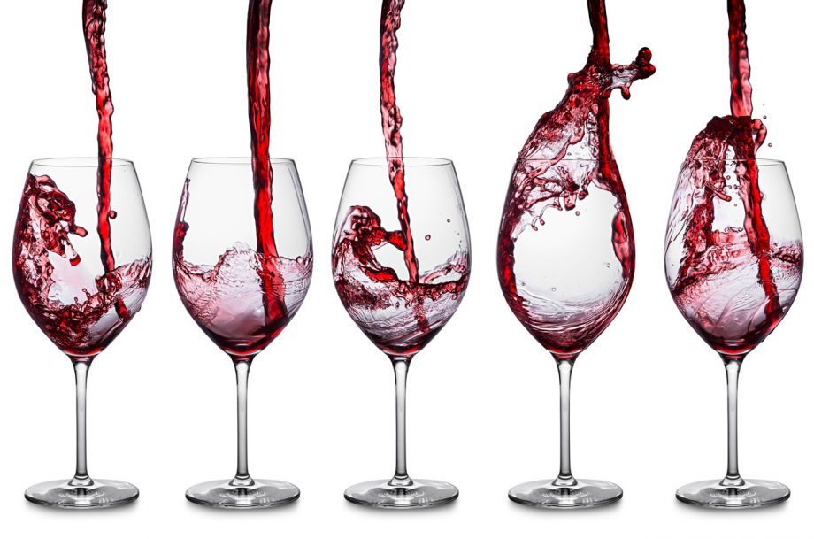

La nostra tradició

Arròs de la senyoreta és un establiment gastronòmic que s'ha destacat al llarg dels anys per oferir una àmplia
varietat de plats basats en el cereal principal de la nostra regió. Fundat en 1995,
aquest restaurant s'ha convertit en un referent en la preparació d'arròs d'alta qualitat.
El seu menú inclou una selecció diversa de diferents arrossos, des de paelles tradicionals fins a creacions contemporànies
amb ingredients frescos i de temporada. L'experiència culinària en aquest restaurant es caracteritza per
la mestria en la cocció de l'arròs i la combinació de sabors, la qual cosa garanteix que els comensals
gaudeixin de plats deliciosos i autèntics. Al llarg dels anys, aquest restaurant ha mantingut
el seu compromís amb l'excel·lència, convertint-se en un lloc icònic per als amants d'aquest plat en la regió.
Els nostres plats estrela

Paella Valenciana
La paella valenciana és un plat icònic de la cuina valenciana i espanyola. Es prepara a base d'arròs,
conegut com "arròs bomba," que es cuina amb pollastre, conill, garrofó, tomaca, safrà i altres ingredients,
tot en una paella ampla i plana. El resultat és un plat riquíssim
que destaca per la seva textura cremosa i sabor intens.
Arròs del senyoret
L'arròs del senyoret és una variant de la paella que es caracteritza per la facilitat de menjar sense haver de pelar els mariscs,
ja que tots els ingredients es preparen sense closca, com ara els musclos, les gambes i els calamars.
Aquest plat sol ser més accessible per als comensals ja que no requereix que els mariscs siguin pelats,
facilitant-ne el consum i gaudint plenament dels sabors marins. El nom "del senyoret" es tradueix com "del senyoret"
i fa referència a l'ús de productes sense closca que són més fàcils de menjar amb les mans netes,
com un "senyor" ho faria. És una opció deliciosa per als amants dels sabors de marisc i arròs valencians.

La nostra bodega
Un bon vi per a acompanyar un deliciós arròs és com la melodia perfecta per acompanyar una obra d'art culinària.
Imagina desembocar en una copa un nectar amb aromes exquisits que es despleguen com un poema gustatiu en cada glop.
El vi ha de ser com una dança harmoniosa amb els sabors de l'arròs, realçant-ne les qualitats i
complementant-les amb una simfonia de notes que et transporta a un món de plaer.
Potser un blanc vibrant, amb la seva frescor i acidesa, que desvetlla els matisos subtils dels ingredients.
O bé, un rosat lleuger i refrescant que ressalta la sensualitat del plat. O si prefereixes un tint fort i robust,
amb els seus tanins sedosos i notes de fruita que fan que cada mossegada d'arròs sigui com una explosió de sabor.
Sigui quin sigui el teu vi preferit, recorda que la combinació perfecta entre vi i arròs pot elevar
la teva experiència gastronòmica a noves alcades de plaer.
Una bona elecció de vi pot transformar un senzill plat d'arròs en una festa per als sentits.
